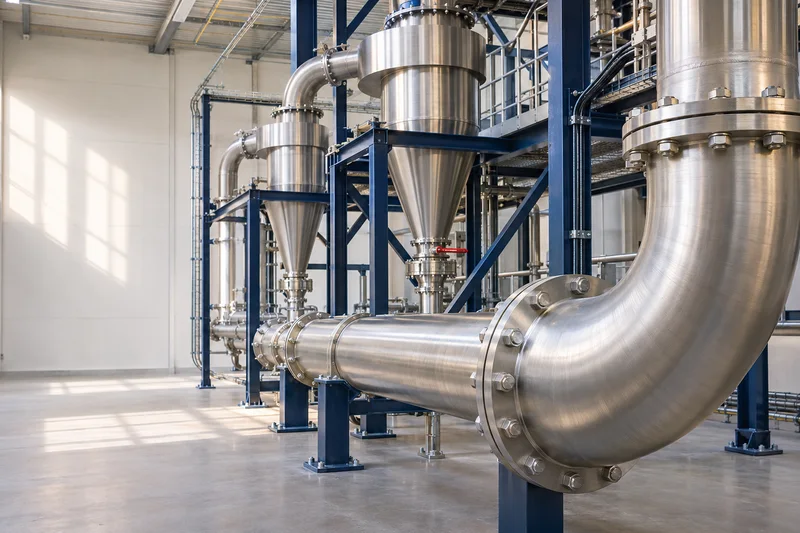
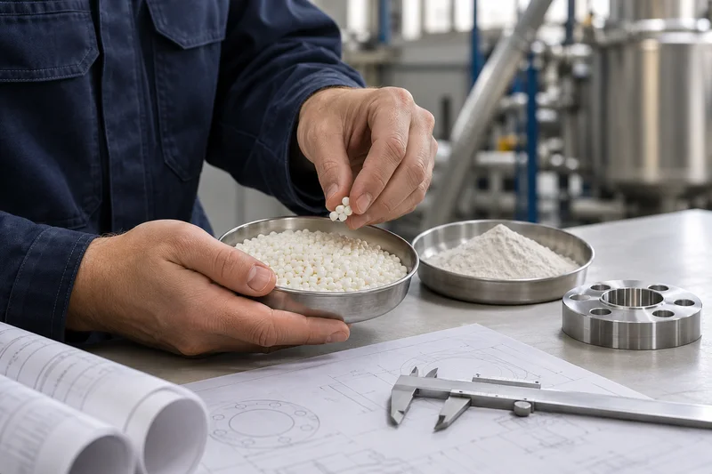

Pneumatic conveying
Product in motion. With air.
Design and supply of pressure and vacuum conveying systems for powders, granules and bulk solids.
Discover pneumatic conveying at Airtechnic


We are Airtechnic Solutions. We connect knowledge of air and bulk solids with the reality of your production.
Get to know us
A good process takes more than good components. It takes insight into how everything works together.
Airtechnic Solutions supports industrial companies in conveying, separating, filtering and processing powders, granules and bulk solids. With our broad knowledge of product and air flows, we supply both individual components and complete process installations.
We combine engineering, practical experience and reliable components into efficient process solutions. Always starting from your material, your installation and your goal.
Product and air cannot be considered separately. That is why we bring these disciplines together in one technical solution.
Product in motion. With air.
Design and supply of pressure and vacuum conveying systems for powders, granules and bulk solids.
Discover pneumatic conveying at AirtechnicThe right air flow makes the difference.
Fans, blowers, dust extraction, filtration and air handling systems for industrial applications.
Discover industrial air technology at AirtechnicGet more out of every fraction.
Powder screens, air classifiers, air knives and zigzag units for classification and product separation.
Discover separation technology at AirtechnicFrom raw material to a controlled process.
Solutions for dosing, conveying, screening, separating and processing bulk materials.
Discover solids processing at AirtechnicYou know your production. We know the technology behind it. Together we arrive at a solution that works in practice.

We immerse ourselves in your product, capacity and production environment. That gives technical advice a practical starting point.
Powders, granules and bulk solids each call for their own approach. We look at product and air flows together.
From a carefully selected part to a complete process installation: the solution fits your question.
We match components and process conditions, with attention to energy use, accessibility and maintenance.
Short lines of communication and clear coordination. We take you through the technical choices and support you during the detailed design.
A new installation, a bottleneck in your process or a component that needs replacing: we are happy to think along with you.
What do you process? What do you want to achieve? We map out your process question and the boundary conditions.
We translate your starting points into a technical direction and make the trade-offs easy to understand.
We align components, engineering and the further detailing with what your process needs.
Tell us what you process and what you are running into. A short explanation is enough to take the first step together.
Discuss your requirementsUseful for the first conversation: your material, required capacity and a short description of your process.
The atmosphere and product images on this page are illustrative.